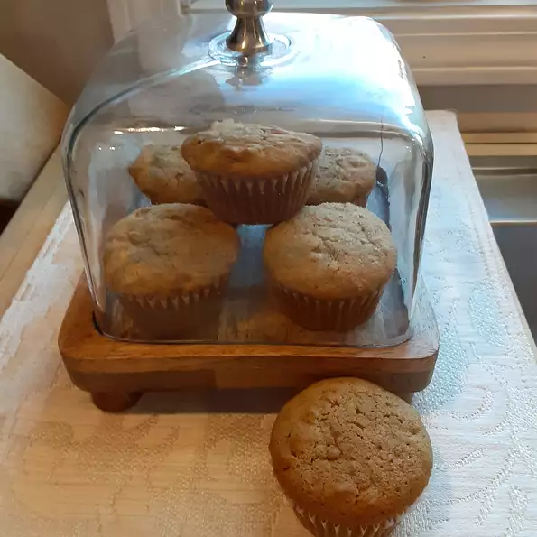

Sweet Potato Muffins

Description
Delectable sweet potato concoction that is a true muffin, and not a cake! Bonus: Dairy free!
Ingredients
- 1 cup white sugar
- 1 cup cooked, mashed sweet potato
- 1/2 cp olive oil
- 1/3 cup water
- 2 eggs, beaten
- 1 and 2/3 cups all purpose flour
- 1 teaspoon ground cinnamon
- 1 teaspoon baking soda
- 1/2 teaspoon baking powder
- 1/2 tablespoon baking powder
- 1/2 cup chopped pecans
Directions
- Preheat the oven to 350 degrees F (175 degrees C). Grease a 12-cup muffin pan or line with paper liners.
- Combine sugar, sweet potato, olive oil, water, and eggs in a bowl. Combine flour, cinnamon, baking soda, baking powder, and salt in a second bowl. Add flour mixture and pecans to the sweet potato mixture. Fold gently until just moistened, being careful not to overmix. Spoon batter into the prepared muffin cups, filling each 3/4 full.
- Bake in the preheated oven until a toothpick inserted into the center comes out clean, 20 to 25 minutes. Do not overbake. Remove from oven and cool on wire rack.
Other Recipes